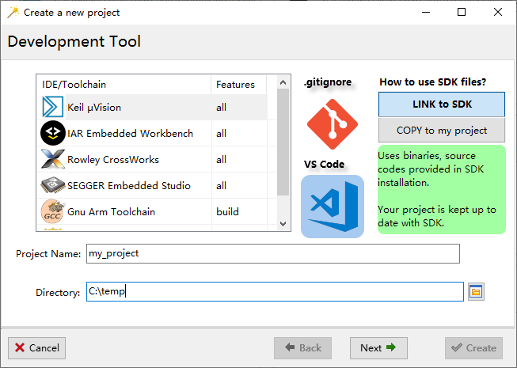
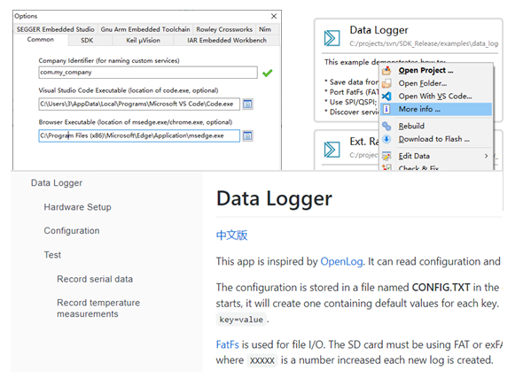

Highlights:
- 开始支持 ING916xx 系列（软件包、外设驱动、工具、示例）
- LiteOS、LVGL、FatFs 相关示例
- 新的 SDK 使用方式
- 脱离 RTOS 完整运行协议栈
如需调试 ING916xx，务必将复位方式设为 VECTRESET（不同的调试器可能使用不同的名词，J-Link 里称为 Core）。
1. 软件包
-
[新增] ING9168xx
typical软件包 (8.0.0) -
[新增]
platform_get_task_handle(8.0.0)通过这个 API 可以获取蓝牙协议栈两个任务（Host、Controller）的句柄，及 FreeRTOS 软件定时器守护任务的句柄 （NoOS 软件包无此句柄）。
-
[新增] 导出 FreeRTOS 任务优先级控制相关的函数 (8.0.0)
3 个相关的函数为：
uxTaskPriorityGet,uxTaskPriorityGetFromISR,vTaskPrioritySet。 -
[新增] SM 事件
SM_EVENT_STATE_CHANGED(8.0.0)借助该事件可直截了当地获知配对流程的最终结果。使用方法参考
HID Keyboard示例。 -
[新增]
platform_set_timer(8.0.0)一种低功耗场景适用的软件定时器，精度优于 RTOS 提供的软件定时器。使用方法可参考示例
Ext. Raw Packet Tx/Rx (NoOS)。 -
[新增] 链路层或者完整协议栈“裸跑” (8.0.0, 8.0.1)
新增的“裸跑”功能适于对实时性要求高的场景。
-
Ext. Raw Packet Tx/Rx (NoOS)将
gen_os_driver里的task_create置为NULL就可以启用链路层“裸跑”模式。 -
Peripheral Console (Realtime)演示了完整协议栈“裸跑”模式。
-
-
[修正] 多组广播及扫描并发时的潜在错误 (8.0.0)
-
[修正] 创建多个 SM 实体时的 HardFault (8.0.0)
-
[修正] Central 角色的 SM 无法恢复加密状态 (8.0.2)
-
[修正] RAM 用完时不必要的断言 (8.0.2)
-
[修正] 用于通信的内存分配策略过于激进 (8.0.2)
2. 库/源代码
-
[新增] ING916xx 外设驱动 (8.0.0)
-
[更新] IIC/EFLASH 模块 (8.0.0)
iic.c模块增加了简单的通信超时处理；eflash.c增加了 eFlash 信息页擦除 API。
3. 示例
-
[新增]
Peripheral Console LiteOS(8.0.0)演示如何将 NoOS 软件包与 LiteOS 集成。Huawei LiteOS 遵循 BSD-3 开源许可协议。
-
[更新] 绝大部分示例 (8.0.0)
绝大部分示例已同时适配 ING918xx、ING916xx 两个芯片系列。
-
[新增]
BQB RF Test App(8.0.0)演示测试相关 API 的用法。
-
[新增]
Ext. Raw Packet Tx/Rx (NoOS)(8.0.0)演示链路层“裸跑” 。
-
[新增]
Peripheral Console (Realtime)(8.0.1)演示完整协议栈“裸跑” 。
-
[新增]
Get Started(8.0.0)该示例为 Playground 的源代码，可用 Keil 或者 Gnu 工具链编译。对于 Keil，该示例还演示了标准库 （而非 MicroLIB）的使用，全面支持 C++。
-
[新增] CoreMark (8.0.0)
-
[新增] LittlevGL (8.0.0)
移植了 LVGL 图形库。
-
[新增] Data Logger (8.0.0)
移植了 FatFs 文件系统。
-
[新增] 所有示例都增加了详细的介绍文档 (8.0.0)
通过 “More info…” 菜单可打开此文档。
-
[更新] Voice Remote Control: 演示了 I2S + DMA (8.0.2)
4. 工具
-
[更新] ING916xx 系列工程项目所需要的各种工具 (8.0.0)
-
[更新] 广播数据编辑器：当数据超过 Legacy 广播最大长度时给出提示 (8.0.0)
-
[更新] AoA 寻向 demo：支持指定子阵列类型，辅助评估子阵列性能 (8.0.0)
通过 AoA 寻向工具的
-array参数可以指定以下阵列类型：类型 说明 4x4 整个 $4 \times 4$ 天线阵 3x3 $3 \times 3$ URA 子阵列 2x2 $2 \times 2$ URA 子阵列 1x4 $1 \times 4$ ULA 子阵列 1x3 $1 \times 3$ ULA 子阵列 1100 $1 \times 2$ ULA 子阵列 1010 $1 \times 2$ ULA 子阵列 1001 $1 \times 2$ ULA 子阵列 -
[更新] Wizard 创建新项目时提供新选项：链接或者复制 SDK 文件 (8.0.0)

两种方式详细对比如下。
-
链接模式 (LINK to SDK)
新项目直接引用 SDK 安装目录里的文件，包括平台头文件、外设源码、工具函数源码等。 当升级 SDK 时，项目里的相关文件也随之更新。
优点：项目可以保持最新状态。
-
复制模式 (COPY to my project)
这种模式下，SDK 的平台包、文件、外设源码、工具函数源码等完整复制到项目文件夹内部。项目文件夹为“自包含”的， 可以不依赖 SDK 而独立编译。升级 SDK 对项目没有影响。
优点：保持项目内 SDK 版本号稳定。
-
-
[更新] Wizard 新增项目文档机制 (8.0.0)
Wizard 现在将项目里
doc/index.md文件识别为文档，通过 “More info…” 菜单可直接打开文档： 使用浏览器作为 Markdown 文档查看器。为浏览器安装 Markdown 插件（如 Markdown Viewer）， 打开 Options，填上浏览器可执行文件的路径，就可以方便地阅读文档了：
-
[修正] Wizard 无法在同一 Family 内部切换型号的问题 (8.0.1)
-
[修正] ING916xx Flash 算法只能在 UART 下载模式使用的问题 (8.0.1)
5. 文档
-
[更新] Application Note: Direction Finding Solution (8.0.0)
加入 AoA 精度的部分测试数据。
6. SDK 迁移
随着 ING916xx 系列的加入，SDK 代码结构做了以下调整
ingsoc.h内定义了INGCHIPS_FAMILY宏- 原 StartUP 文件夹下的头文件移动到子文件夹 ing918 内
- 同名外设驱动位于同一文件内，并用
INGCHIPS_FAMILY宏区分芯片系列
升级到 8.0 SDK 后，正常情况下，已有项目可以正常编译。但是由于项目仍然在引用 StartUP 文件夹下的 ingsoc.h，
编译时会出现警告信息，提醒修改头文件搜索路径。
将头文件搜索路径里的 .../StartUP 修改为 .../StartUP/ing918 可以解除此警告信息。
5.1 如何使一个项目同时兼容 ING918xx、ING916xx？
主要从五个方面考虑。
-
核心功能
两个芯片系列处理、存储能力差别较大，对于超出 ING918xx 能力的功能，无法兼容于 ING918xx。
-
IDE 项目设置
Wizard 的芯片型号切换功能可以自动完成绝大部分设置的修改、适配。
-
蓝牙相关
此部分天然地兼容 ING918xx、ING916xx。
-
RTOS 相关
此部分天然地兼容 ING918xx、ING916xx。
-
外设相关
对于 ING918xx、ING916xx 都具备的外设功能，根据
INGCHIPS_FAMILY区分芯片系列并分别实现功能。对于仅有一个系列支持的外设功能，无法实现兼容。
说明: ING916x 系列芯片的外设除了串口外全部更新，在开发驱动程序时已尽量保持软件接口x的兼容性， 但是 1) 由于外设硬件功能差异, 2) 为了充分利用外设的全部功能，无法做到完全兼容。
综上，主要在于外设相关的部分代码需要区分芯片系列分别开发。SDK 里的绝大部分示例已兼容两个系列，可供参考，比如：
- Thermometer with FOTA：完全兼容，涉及 I2C、FOTA
- Voice Remote Control：涉及硬件定时器（兼容）、I2S（仅限 ING916xx）、PDM（仅限 ING916xx）等